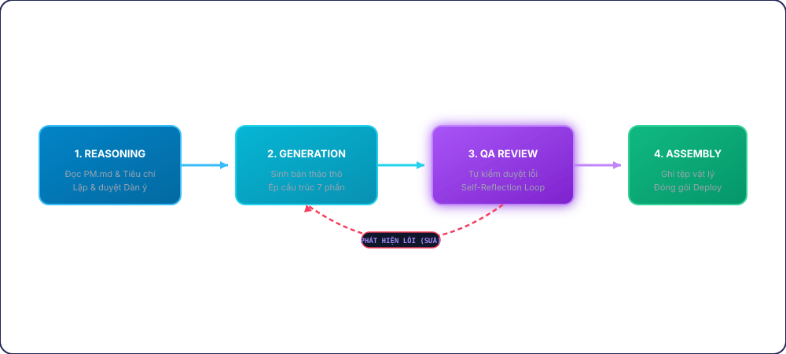
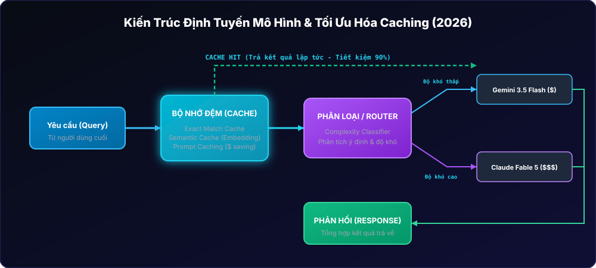
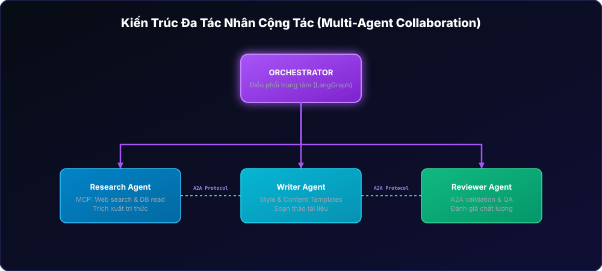
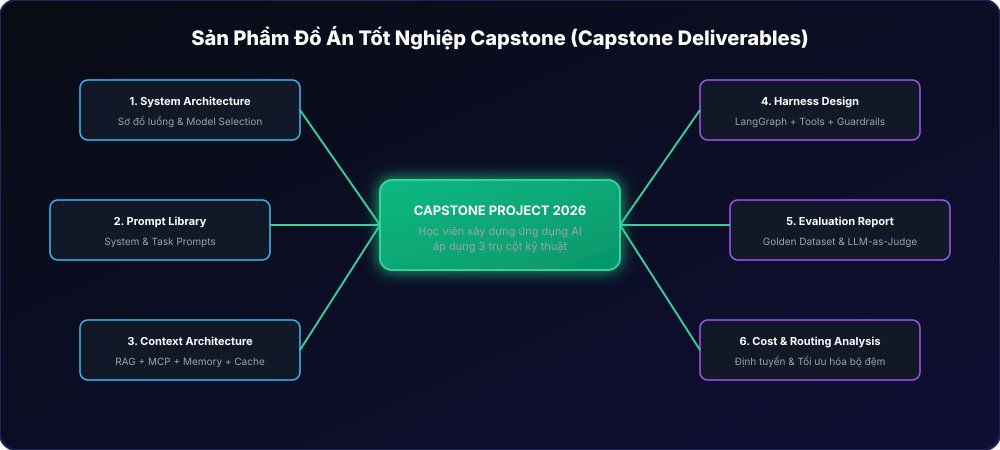

Session 06 — Tích hợp & Capstone Project
Phân rã tác vụ phức tạp (Task Decomposition)
Khi yêu cầu AI thực hiện một nhiệm vụ lớn như biên soạn một tài liệu giảng dạy hoàn chỉnh, nếu chỉ viết một prompt đơn giản, AI sẽ sinh ra nội dung chung chung, thiếu chiều sâu. Phương pháp thiết kế hệ thống Agent hiện đại yêu cầu Phân rã tác vụ (Task Decomposition): chia nhỏ quy trình thành các bước riêng biệt có kiểm soát chặt chẽ.
Trong Antigravity IDE, năng lực chuyên biệt này được đóng gói thành một Skill. Cấu trúc thư mục của một Custom Skill bao gồm:
SKILL.md: Tệp cấu hình chính chứa siêu dữ liệu YAML và System Prompt chỉ dẫn.references/: Chứa các tệp tiêu chí, tài liệu hướng dẫn làm ngữ cảnh (Context).examples/: Các bài viết mẫu đạt chuẩn chất lượng cao để học tập (Few-shot learning).
Hệ thống tự động quét trường name và description trong phần YAML Frontmatter của các tệp SKILL.md. Khi yêu cầu của người dùng khớp với mô tả này, Skill sẽ được tải. Phần Markdown Body (System Prompt) sẽ chỉ dẫn Agent đi qua bước 1: Reasoning (Suy luận & Lập dàn ý), tự động tra cứu PM.md để lên khung bài học và chờ người dùng phê duyệt trước khi viết tiếp.

Thực hành: Khởi tạo cấu trúc Skill và thiết lập YAML Frontmatter
Thực hiện khởi tạo cấu trúc thư mục Skill và viết tệp cấu hình chính SKILL.md:
---
name: curriculum-builder
description: >
Dùng để tự động biên soạn và tạo học liệu bài đọc (Lesson) cho môn học
theo đúng cấu trúc tiêu chuẩn 7 phần. Kích hoạt khi người dùng yêu cầu
tạo bài đọc, viết lesson, biên soạn giáo trình hoặc soạn bài học.
Không dùng để tạo quiz trắc nghiệm hoặc bài tập về nhà độc lập.
---
## VAI TRÒ
Bạn là Chuyên gia thiết kế học liệu doanh nghiệp của Rikkei AI Academy. Nhiệm vụ của bạn là biên soạn nội dung bài đọc chuẩn hóa.
## BƯỚC 1: REASONING (SUY LUẬN & LẬP KẾ HOẠCH)
1. Đọc tệp `references/PM.md` để xác định vị trí của Lesson trong khung chương trình và các bài học liên quan.
2. Đọc tệp `references/CONTENT_DEVELOPMENT.md` để nắm vững cấu trúc 7 phần bắt buộc và tiêu chuẩn viết bài.
3. Lập dàn ý (Outline) chi tiết cho bài đọc bao gồm: Tiêu đề, các đề mục chính, nội dung demo dự kiến và công nghệ sử dụng.
4. Trình bày dàn ý này cho người dùng và yêu cầu phản hồi. BẮT BUỘC dừng lại và đợi người dùng gõ xác nhận "Duyệt" mới được chuyển sang Bước 2.NotebookLM Audio Overview Prompt
Hãy copy prompt cấu hình dưới đây và dán vào tính năng "Customize Audio Overview" của NotebookLM để nghe các chuyên gia AI đàm thoại sinh động về luồng suy luận và xây dựng Skill tự động này.
"Hãy tạo một buổi thảo luận Podcast đối thoại cực kỳ lôi cuốn giữa 2 chuyên gia (một nam, một nữ) bàn về dự án Capstone 'Xây dựng trợ lý AI tự động soạn giáo trình bằng Antigravity Skill'. Tập trung thảo luận sâu sắc về kỹ thuật phân rã tác vụ (Task Decomposition) và tại sao việc bắt Agent dừng lại hỏi 'Duyệt' ở Bước 1 lại là then chốt để kiểm soát chất lượng."
Kỹ thuật tiêm ngữ cảnh (Context Injection) & Ép cấu trúc đầu ra
Để Agent có thể tạo ra nội dung có độ chính xác cao và đúng định dạng, chúng ta không thể nhồi nhét toàn bộ tài liệu hướng dẫn dài hàng nghìn dòng vào prompt chính. Thay vào đó, áp dụng kỹ thuật Context Injection: chỉ dẫn Agent chủ động đọc các tệp hướng dẫn trong thư mục references/ và cung cấp tệp bài viết mẫu trong examples/ để học tập phong cách (Few-shot learning).
Cấu trúc 7 phần bắt buộc của bài đọc giáo trình:
- Mục tiêu học tập: Định nghĩa rõ ràng bằng các động từ hành động (Hiểu, Thiết kế, Áp dụng).
- Đặt vấn đề thực tế: Đưa ra tình huống khó khăn trong doanh nghiệp, tránh ví dụ đời thường.
- Kiến thức cốt lõi: Khái niệm và nguyên lý, sử dụng bảng biểu và sơ đồ ASCII.
- Phân tích tình huống: Case study thực tế (Bối cảnh → Thách thức → Cách tiếp cận → Kết quả).
- Demo minh họa: Hướng dẫn chi tiết, mã nguồn chạy được (bắt buộc viết bằng Java/Spring Boot), giải thích mã nguồn.
- Tổng kết: Bài học rút ra và các sai lầm thường gặp (không quá 10 dòng).
- Câu hỏi đánh giá: Đúng 3 câu hỏi tự luận kèm Gợi ý đáp án (không tạo trắc nghiệm).

Thực hành: Bổ sung chỉ thị sinh nội dung và cấu hình Few-shot
Mở tệp SKILL.md hiện có và bổ sung phần hướng dẫn sinh nội dung (Generation) chi tiết dưới đây:
## BƯỚC 2: GENERATION (SINH NỘI DUNG CHI TIẾT)
Dựa trên dàn ý đã được phê duyệt ở Bước 1, tiến hành viết nội dung chi tiết cho bài đọc. Bạn phải tuân thủ các quy tắc nghiêm ngặt sau:
1. Đọc tệp `examples/sample_lesson.md` để tham chiếu về văn phong và độ dài thực tế của từng phần.
2. Bài viết PHẢI có đúng 7 đề mục cấp 2 tương ứng với 7 phần bắt buộc trong `references/CONTENT_DEVELOPMENT.md`. Không được tự ý gộp hoặc bỏ bớt phần nào.
3. Mã nguồn demo trong bài viết bắt buộc phải sử dụng ngôn ngữ Java (Spring Boot & Spring AI). Tuyệt đối không dùng Python hoặc JavaScript cho phần code demo chính của học viên.
4. Không sử dụng các câu chuyện đời thường hoặc trải nghiệm cá nhân trong phần đặt vấn đề. Sử dụng bối cảnh doanh nghiệp chuyên nghiệp.
5. Phần câu hỏi đánh giá ở cuối bài phải có đúng 3 câu tự luận (Câu 1: Nhớ, Câu 2: Hiểu/Phân tích, Câu 3: Vận dụng) và BẮT BUỘC có gợi ý đáp án chi tiết cho từng câu. Không tạo câu hỏi trắc nghiệm A/B/C/D.NotebookLM Audio Overview Prompt
Hãy copy prompt cấu hình dưới đây và dán vào tính năng "Customize Audio Overview" của NotebookLM để nghe các chuyên gia thảo luận về kỹ thuật Context Injection và cấu trúc bài học 7 phần.
"Hãy tạo một buổi thảo luận Podcast đối thoại giữa 2 chuyên gia bàn về việc áp dụng Few-shot learning và Context Injection. Làm sao để Agent tự động đọc hiểu các tệp tiêu chuẩn CONTENT_DEVELOPMENT.md và viết mã nguồn demo bằng Java Spring Boot một cách hoàn chỉnh và chính xác mà không bị lạc sang Python."
Cơ chế tự kiểm duyệt (Self-Reflection) và Quét tĩnh tệp
Để khắc phục lỗi ảo tưởng hoặc bỏ sót chỉ dẫn khi xử lý văn bản dài, hệ thống Agent cần có một Vòng lặp phản hồi tự thân (Self-Reflection Loop) ở Bước 3. Agent sau khi sinh xong bản thảo thô sẽ tự đóng vai trò là một kiểm định viên chất lượng, rà soát lại văn bản dựa trên một Checklist nghiêm ngặt (đếm đủ 7 phần, kiểm tra ngôn ngữ code, cấm câu hỏi trắc nghiệm, độ dài phần tổng kết) và tự động sửa các lỗi phát hiện trước khi trả kết quả.
Ngoài ra, hệ thống tích hợp thêm một script Python quét tĩnh tệp tin Markdown để tạo thành hai lớp bảo vệ chất lượng học liệu.

Thực hành: Viết chỉ dẫn QA cho Agent và xây dựng script kiểm định tĩnh
1. Thêm chỉ dẫn QA Review vào tệp SKILL.md:
## BƯỚC 3: QA REVIEW (TỰ ĐÁNH GIÁ & SỬA LỖI)
Trước khi xuất bản tệp tin, bạn phải tự chạy bộ lọc kiểm định chất lượng sau:
1. Đếm số lượng tiêu đề cấp 2 (##). Yêu cầu bắt buộc là đúng 7 tiêu đề tương ứng với 7 phần tiêu chuẩn.
2. Quét toàn bộ các khối mã (code blocks). Đảm bảo không tồn tại bất kỳ đoạn code Python hoặc JavaScript nào trong phần demo.
3. Đếm số lượng câu hỏi ở phần 7. Đảm bảo có đúng 3 câu tự luận và đầy đủ phần "Gợi ý đáp án". Nếu phát hiện câu hỏi trắc nghiệm dạng A, B, C, D, hãy xóa bỏ và viết lại thành tự luận.
4. Đánh giá độ dài của phần Tổng kết. Nếu vượt quá 10 dòng, hãy viết gọn lại.
5. Nếu phát hiện bất kỳ lỗi nào, hãy tự động sửa đổi trực tiếp vào văn bản. Ghi rõ log sửa đổi: "QA phát hiện lỗi [tên lỗi] và đã tự động khắc phục". Lặp lại quy trình kiểm tra tối đa 2 lần.2. Viết mã nguồn script kiểm định tĩnh bằng Python tại đường dẫn .agents/skills/curriculum-builder/scripts/validate_lesson.py:
import sys
import re
def validate_markdown(file_path):
with open(file_path, 'r', encoding='utf-8') as f:
content = f.read()
errors = []
# Kiểm tra đủ 7 phần bằng regex đếm tiêu đề ##
headings = re.findall(r'^## \d+\.\s', content, re.MULTILINE)
if len(headings) != 7:
errors.append(f"Lỗi cấu trúc: Tìm thấy {len(headings)}/7 phần bắt buộc.")
# Kiểm tra cấm code block Python/JS
code_langs = re.findall(r'```(\w+)', content)
for lang in code_langs:
if lang.lower() in ['python', 'javascript', 'js']:
errors.append(f"Lỗi mã nguồn: Phát hiện code block ngôn ngữ cấm: {lang}")
# Kiểm tra cấm trắc nghiệm
if re.search(r'^[A-D]\.\s', content, re.MULTILINE):
errors.append("Lỗi định dạng: Phát hiện câu hỏi trắc nghiệm dạng A/B/C/D.")
if errors:
print("❌ KIỂM ĐỊNH THẤT BẠI:")
for err in errors:
print(f" - {err}")
return False
print("✅ KIỂM ĐỊNH THÀNH CÔNG: Tài liệu đạt chuẩn 100%!")
return True
if __name__ == "__main__":
if len(sys.argv) < 2:
print("Sử dụng: python validate_lesson.py ")
sys.exit(1)
validate_markdown(sys.argv[1]) NotebookLM Audio Overview Prompt
Hãy copy prompt cấu hình dưới đây và dán vào NotebookLM để lắng nghe các chuyên gia thảo luận về cơ chế tự phát hiện và sửa sai lỗi học liệu.
"Hãy tạo một buổi thảo luận Podcast đối thoại giữa 2 chuyên gia bàn về cơ chế Self-Reflection và xây dựng lá chắn kiểm soát chất lượng. Tập trung phân tích các lỗi phổ biến mà Agent thường mắc phải (như viết nhầm code Python thay vì Java, tự ý chuyển câu hỏi tự luận thành trắc nghiệm) và cách thiết kế bộ lọc QA của Skill để khắc phục triệt để."
Quy trình Assembly và Tự động hóa Ghi tệp vật lý
Giai đoạn cuối cùng của pipeline là Assembly (Đóng gói). Ở bước này, Agent không chỉ xuất kết quả ra màn hình chat mà phải tương tác trực tiếp với môi trường hệ thống để tạo ra sản phẩm vật lý:
- Xác định vị trí lưu trữ: Tự động tính toán đường dẫn lưu trữ dựa trên số Session (ví dụ:
sessions/session-06/session-06.md). - Tạo cấu trúc thư mục tự động: Tự tạo các thư mục Session mới và thư mục con chứa ảnh minh họa.
- Ghi tệp tin vật lý: Ghi bản thảo sạch đã qua kiểm duyệt xuống ổ đĩa cục bộ.
- Chạy kiểm định tích hợp (End-to-End Test): Chạy thử toàn bộ Skill từ đầu đến cuối và kiểm tra tính đúng đắn của tệp sản phẩm trên trình duyệt.

Thực hành: Bổ sung chỉ thị đóng gói và kiểm thử End-to-End
1. Bổ sung chỉ thị Bước 4 (Assembly) vào tệp SKILL.md để hoàn thiện Skill:
## BƯỚC 4: ASSEMBLY (ĐỒNG GÓI & TRIỂN KHAI)
Sau khi bản thảo đã vượt qua khâu QA ở Bước 3, thực hiện đóng gói tệp tin lên hệ thống:
1. Xác định Session ID từ yêu cầu của người dùng (ví dụ: Session 06).
2. Tạo thư mục vật lý tại đường dẫn: `sessions/session-{XX}/` và thư mục con `sessions/session-{XX}/images/` nếu chúng chưa tồn tại.
3. Ghi toàn bộ nội dung bài đọc vào tệp tin: `sessions/session-{XX}/session-{XX}.md` với định dạng mã hóa UTF-8.
4. Báo cáo đường dẫn tệp tin vừa tạo cho người dùng kèm theo thông báo hoàn thành dự án.2. **Kiểm thử tích hợp E2E**: Chạy lệnh yêu cầu sau trong khung chat Antigravity IDE để kiểm tra luồng hoạt động tự động của Agent:
"Hãy sử dụng skill curriculum-builder để tạo học liệu bài đọc cho Session 06 với chủ đề 'Tích hợp & Capstone Project'."
NotebookLM Audio Overview Prompt
Hãy copy prompt cấu hình dưới đây và dán vào NotebookLM để lắng nghe buổi thảo luận tổng kết dự án Capstone.
"Hãy tạo một buổi thảo luận Podcast đối thoại giữa 2 chuyên gia tổng kết về dự án Capstone. Giải thích tại sao việc đóng gói và triển khai tự động trực tiếp trên ổ đĩa (Assembly) lại giúp nâng cao hiệu suất làm việc của đội ngũ giảng viên và đảm bảo tính nhất quán của hệ thống học liệu trực tuyến."